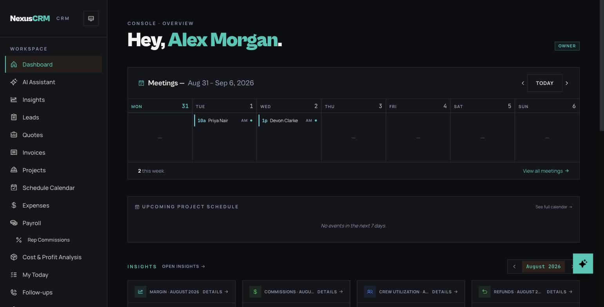
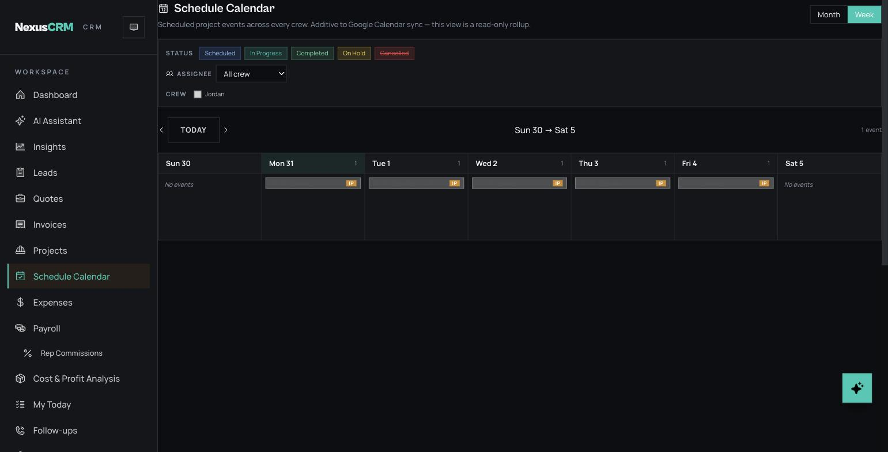
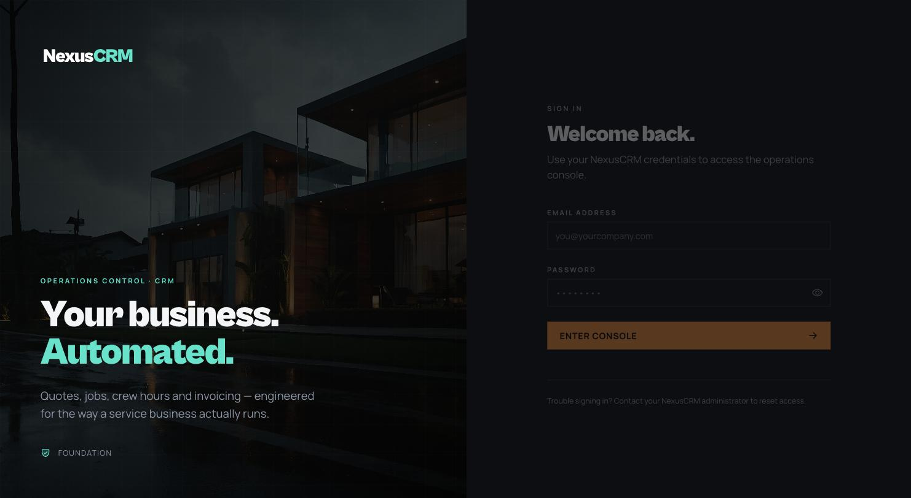

Real screens, real numbers
What does NexusCRM look like?
Screenshots from a running NexusCRM instance — not concept art. Dark, fast, and built to be read from a truck at 7 a.m.

The owner's morning view: this week's meetings, the project schedule, and month-to-date insights.

Live margin and crew utilization — the P&L updates as the work happens.

The dispatch week: every crew's project events, filterable, synced to Google Calendar.

The AI assistant — ask about margin, or hand it your site notes and get a draft quote.

Your team's front door — branded to your company on every client deployment.